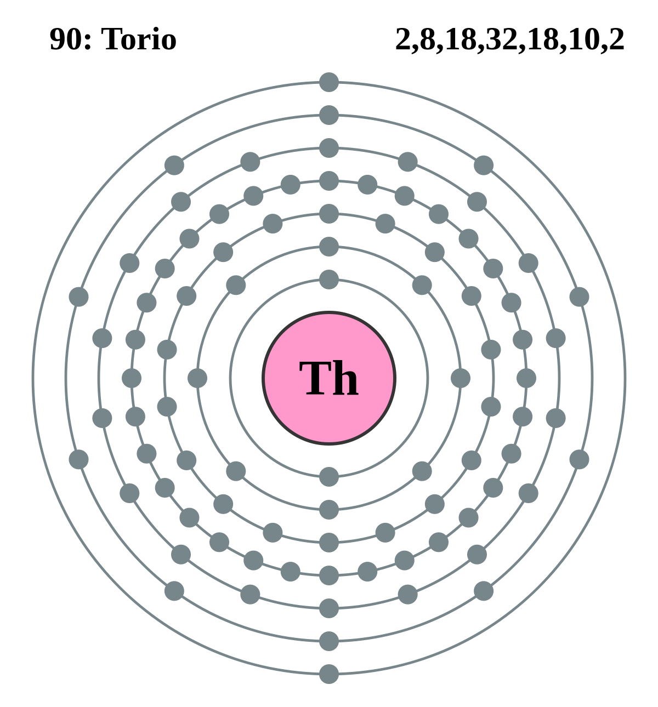

|
|
||
|
TORIO Es uno de los elementos de la serie de los actínidos. Es radiactivo con una vida media de aproximadamente 1.4 x 1010años. Los compuestos de óxido de torio se utilizan en la producción de mantas de gas incandescentes. El óxido de torio se ha empleado también incorporado al tungsteno metálico, y sirve para producir filamentos para lámparas eléctricas. Se emplea en catalizadores para facilitar ciertas reacciones de química orgánica y tiene aplicaciones especiales como material cerámico de alta temperatura. El metal o sus óxidos se utilizan en algunas lámparas electrónicas, fotoceldas y electrodos especiales para soldadura. El torio tiene aplicaciones importantes como agente de aleación en algunas estructuras metálicas. Las personas siempre estarán expuestas a pequeñas cantidades de torio a través del aire, la comida y el agua, porque se encuentra casi en cualquier lugar en La Tierra. |
 |
DATOS Número Atómico: 90 Peso Atómico: 232.0380 Electronegatividad: 1.3 Configuración Electrónica:[Rn]6d2 7s2 Estados de Oxidación: +2,+3,+4 No. de Electrones de Valencia: 4 |